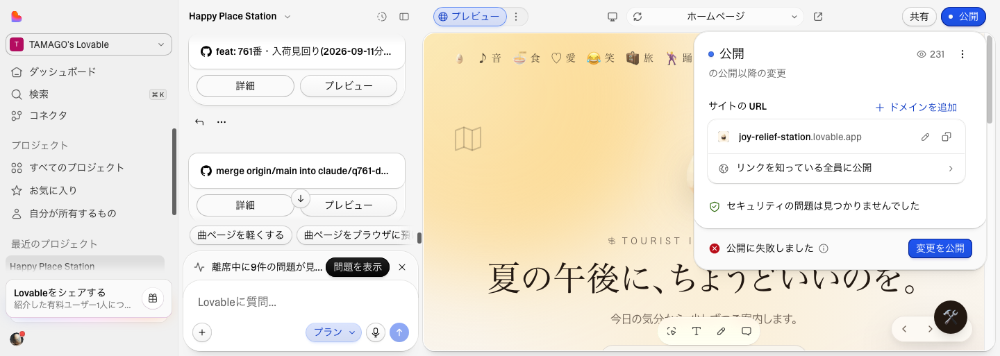

①/cover-guideを開いた直後。卵は1匹だけ
②「話す」を押すと聞き取り中の表示に変わり挨拶が出る
③「猫」で検索→5件表示(安心4+冒険1)
④カードを押すとその場でインライン再生(別ページに飛ばない)
⑤「もっと詳しく」の詳細画面
⑥戻る→案内所(/cover-guide)に戻る
⑦「夏の日」で検索→5件表示
⑧Lovable編集画面。「公開に失敗しました」が表示され続けている(0:35時点)


| 確認項目 | 結果 |
|---|---|
| 話すボタンが反応する | 直った |
| 候補が4〜5件出る | 直った |
| カードがその場で再生される(別ページに飛ばない) | 直った |
| 戻ると案内所に戻る | 直った |
| 卵が1匹になる | 直った |
| Lovable本番への公開反映 | ブロック中(プラットフォーム側「公開に失敗しました」。18:03〜0:35で9回連続失敗を実測) |